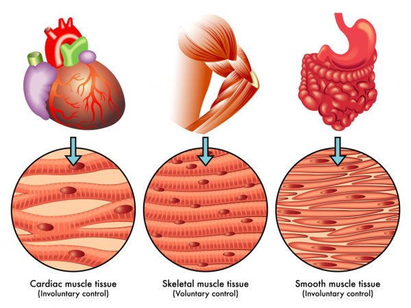
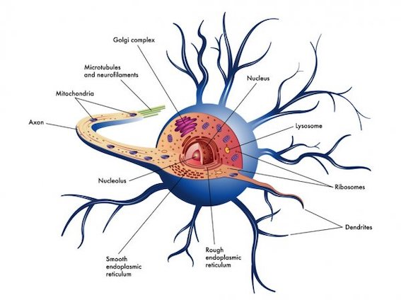
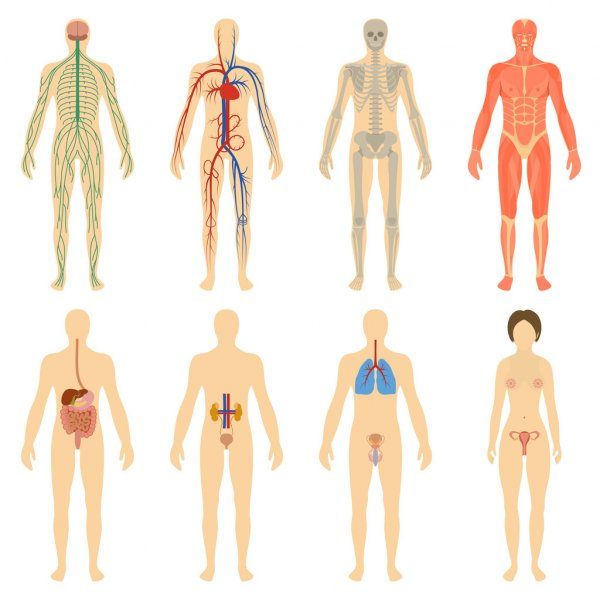

As células são as unidades fundamentais da vida. Nosso corpo possui aproximadamente 10 trilhões de células, as quais, por sua vez, são constituidas por organelas, que são como órgãos da célula.
As células do corpo humano também são especializadas, ou seja, existem diversos tipos de célula nos nossos organismos. Uma célula hepática (do fígado) é muito diferente de uma neurônio (principal célula do sistema nervoso), por exemplo.
Existem basicamente três tipos de células: procariotas (originado do latim, pro-primitivo e carionte-relativo a célula) e eucariotas (originado do latim, eu-verdadeiro e carionte-relativo a célula), as quais são subdivididas entre animais e vegetais.
Como é possível observar, a célula procariota (primeira foto) é a que apresenta menos organelas e, por isso, é a que apresenta menor complexidade. Além disso, elas não possuem núcleos definidos, ou seja, seus materiasi genéticos ficam dispersos pelo citosol. Já as outras duas são células eucariotas, sendo a última delas a eucariota vegetal. Ambas possuem núcleo definido e uma maior variedade de organelas.
As células no corpo humano possuem diferentes características, o que é verificável ao analisarmos e compararmos células de diferentes tecidos. Células de diferentes tecidos possuírão diferentes concentrações de organelas, o que dependerá de suas funções. Uma célula hepática, por exemplo, possui uma quantidade maior de Retículo Endoplasmático Liso (Smooth endoplasmic reticulum) que as demais células do corpo, já que no fígado há uma grande produção de esteróides e há também nesse órgão a desintoxicação de substâncias negativas para nosso corpo, como por exemplo o álcool, funções realizadas por essa organela.
Os tecidos podem ser definidos como células trabalhando juntas. A histologia é o ramo da ciência que estuda aprofundamente os tecidos. Como dito anteriormente, as células se diferenciam tanto na estrutura quanto no funcionamento (morfofuncionalmente) e são elas que constituem os tecidos. Eles podem ser divididos em quatro grupos fundamentais:
Função: revestimento e proteção de superfície de órgãos.
Características: células bem unidas (justapostas) que podem se aprofundar e formar glândulas.
Exemplos: epiderme, glândulas sudoríparas.
Função: unir órgãos e preencher espaços vazios.
Características: células bem espaçadas umas das outras com material intercelular (entre as células).
Tipos:
Derme: abaixo da epiderme, na pele;
TCPD: tecido conjuntivo propriamente dito, preenchimento de espaços;
Sanguíneo/ Hematopoiético: (isso mesmo, o sangue é um tecido do nosso corpo!) com plasma, hemáceas (transportadoras de gases O2 e CO2), leucócitos (células de defesa) e plaquetas (participam da coagulação sanguínea em casos de cortes ou feridas);
Adiposo: reserva de energia, manutenção da temperatura corporal, isolante térmico, proteção contra choques mecânicos;
Ósseo: com cálcio. Confere Rigidez, resistência e sustentação do corpo;
Cartilaginoso: sustentação com flexibilidade (pontas do nariz e orelhas).
Tipos:
Esquelético: movimento voluntário, com estrias, vigoroso. Estão presos aos ossos por tendões;
Tecido Estriado Muscular Cardíaco: movimento involuntário, com estrias. Forma o coração;
Tecido Muscular liso: não estriado, involuntário. Presente nos órgãos internos como estómago e intestino (respon'savel pelos movimentos peristálticos que ocorrem durante a digestão dos alimentos).
Função: transmissão das informações por impulsos nervosos (dos órgãos dos sentidos ao sistema nervoso central e das respostas do sistema nervoso aos músculos e glândulas).
Características: formado por células chamadas neurônios.
 À esquerda, é possível vizualizar os três tipos de células musculares, já à direita, está representado o neurônio. Note como há notáveis diferenças em suas etrututras. Quando os tecidos se agrupam para desempenharem uma mesma função, eles formam os órgãos do nosso corpo.
Os órgãos do nosso organismo se juntam ao desempenharem funções semelhantes e , ao se interligarem, formam os sistemas.
São 14 os principais sistemas do nosso organismo são: cardiovascular, respiratório, digestório, nervoso, sensorial, endócrino, excretor, urinário, reprodutor, esquelético, muscular, imunológico, linfático e tegumentar.
Aqui, porém, focaremos primeiramente nos sistemas: cardiovascular, respiratório, nervoso, urinário, esquelético e digestório.
É pelo sistema cardiovascular que o oxigênio de que precisamos para realizar a respiração celular e os nutrientes de que necessitamos chegam para todas as células do corpo. Esse sistema é formado pelas artérias, veias e pelo coração.
O sistema respiratório é responsável pela ocorrência das trocas gasosas realizadas pelo nosso corpo, que inalamos o oxigênio necessário para a respiração celular e exalamos o gás carbônico, resíduo desse processo de respiração celular. Ele é formado pelas vias respiratórias e pelos pulmões. Os órgãos que compõem as vias respiratórias são: cavidades nasais, faringe, laringe, traqueia e brônquios.
O sistema nervoso representa uma rede de comunicações do organismo. É formado por um conjunto de órgãos do corpo humano que possuem a função de captar as mensagens, estímulos do ambiente, "interpretá-los" e "arquivá-los". Consequentemente, ele elabora respostas, as quais podem ser dadas na forma de movimentos, sensações ou constatações.
O Sistema Nervoso está dividido em duas partes fundamentais: sistema nervoso central e sistema nervoso periférico. Basicmante, o sistema nervoso periférico recebe as mensagens e as envia até o sistema nervoso central, onde as mensagens são interpretadas e respondidas. As respostas, por sua vez, são enviadas novamente ao sistema nervoso periférico, onde ocorrem as repostas.
O Sistema Nervoso Central é constituído pelo encéfalo e pela medula espinhal, ambos envolvidos e protegidos por três membranas denominadas meninges. O sistema nervoso periférico é formado por nervos que se originam no encéfalo e na medula espinhal. Importante destacar que existem dois tipos de nervos: os cranianos e os raquidianos.
O sistema urinário é responsável por filtrar o sangue, extraindo os resíduos tóxicos, eliminando o excesso de água e de sais, reabsorvendo as substâncias reaproveitáveis. Esse sistema é composto por dois rins e pelas vias urinárias, formada por dois ureteres, a bexiga urinária e a uretra.
A unidade básica de filtragem nos rins se chama néfron, e é nele que ocorre a filtração do sangue. O produto dessa filtração é a urina, que é composta por aproximadamente 95% de água e suas principais excretas são a ureia, ácido úrico e o cloreto de sódio. Seu pH está entre 4,6 e 8,0. A ureia possui fórmula química CH4N2O e é o produto natural do metabolismo das proteínas no fígado.
O sistema esquelético é constituído de ossos e cartilagens, além dos ligamentos e tendões. O esqueleto é responsável por sustentar e dar forma ao corpo. Ele também protege os órgãos internos e atua em conjunto com os sistemas muscular e articular para permitir o movimento.
Outras funções são a produção de células sanguíneas na medula óssea e armazenamento de sais minerais, como o cálcio. O osso é uma estrutura viva, muito resistente e dinâmica pois tem a capacidade de se regenerar quando sofre uma fratura.
O esqueleto humano é composto por 206 ossos com diferentes tamanhos e formas. Eles podem ser longos, curtos, planos, suturais, sesamoides ou irregulares.
O Sistema Digestório é também conhecido como Sistema Digestivo ou Aparelho Digestivo. A ação desses órgãos está relacionada ao processo de transformação do alimento, que tem o objetivo de ajudar na absorção dos nutrientes. Tudo isso acontece por meio das digestões mecânicas e químicas.
Os órgãos do sistema digestório são: boca, faringe, esôfago, estômago, intestino delgado e intestino grosso, além dos órgãos anexos: glândulas salivares, dentes, língua, pâncreas, fígado e vesícula biliar.
A digestão dos alimentos ocorre graças a digestão mecânica (mastigação pelos dentes, deglutição e movimentos peristálticos, movimentos que acontecem no tubo digestivo) e a digestão química (que acontece por meio das enzimas)
Sem as enzimas, o processo de digestão dos alimentos não seria viável a vida, uma vez que demoraria um tempo enorme para acontecer. Por isso, as enzimas são chamadas de catalizadoras, ou seja, substâncias que aceleram processos metabólicos, como a digestão no caso.
A amilase salivar é uma ensima e ela atua na boca, sendo responsável por começar a digestão do amido dos carboidratos. A pepsina é uma das enzimas que atua no processo da digestão e ela digere as proteínas no estômago. E a lipase é uma enzima que atua no duodeno, sendo responsável por fazer a digestão química dos lipídeos, gorduras. É necessário ter em mente que as enzimas apenas funcionam bem em temperaturas ótimas e em pH's ótimos, os quais variam de enzima para enzima.
Os produtos finais da digestão são: glicose (que vem dos carboidratos, como pães, arroz e doces), aminoácidos (que vêm das proteínas, que podem ser encontradas em carnes, ovos e leguminosas) e glicerol e ácidos graxos (os quais vêm dos lipídeos, gorduras, as quais podem ser encontradas em oleaginosas e gorduras como manteiga e azeite de oliva)
No intestino grosso, por último, ocorre a reabsorção de água, para que, nas fezes, o corpo não se desidrate muito durante o processo. E, por fim, o que não é reaproveitado pelo organismo sai do corpo na forma de fezes.